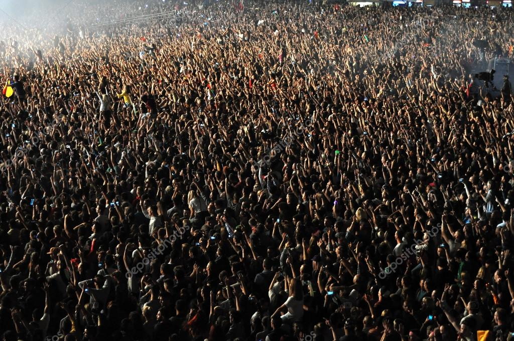
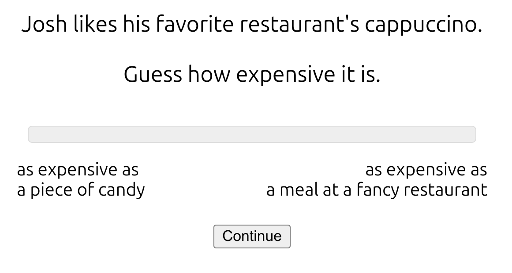
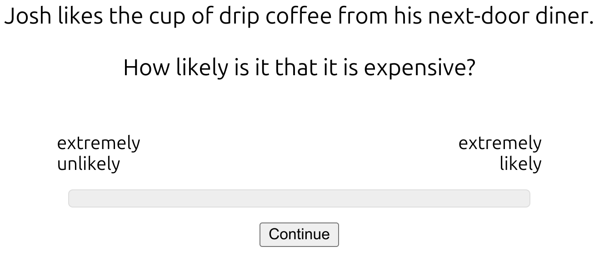
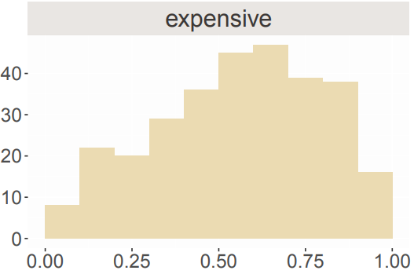
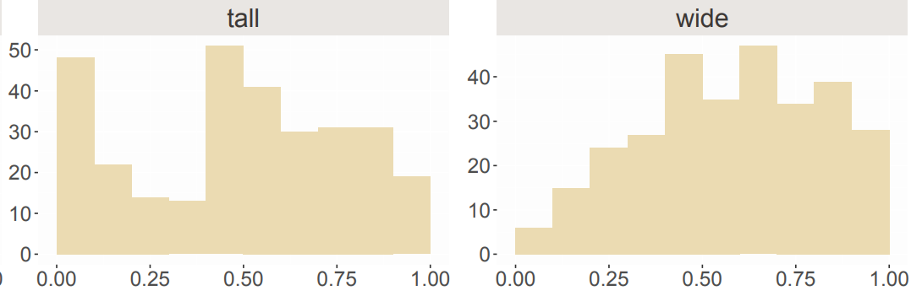
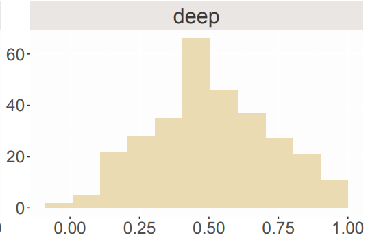
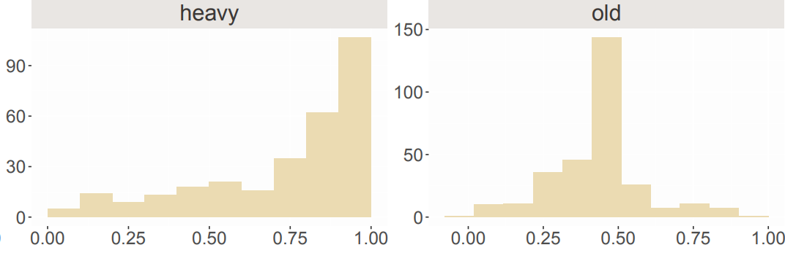

\[ \newcommand{\expr}[3]{\begin{array}{c} #1 \\ \bbox[lightblue,5px]{#2} \end{array} ⊢ #3} \newcommand{\ct}[1]{\bbox[font-size: 0.8em]{\mathsf{#1}}} \newcommand{\updct}[1]{\ct{upd\_#1}} \newcommand{\abbr}[1]{\bbox[transform: scale(0.95)]{\mathtt{#1}}} \newcommand{\pure}[1]{\bbox[border: 1px solid orange]{\bbox[border: 4px solid transparent]{#1}}} \newcommand{\return}[1]{\bbox[border: 1px solid black]{\bbox[border: 4px solid transparent]{#1}}} \def\P{\mathtt{P}} \def\Q{\mathtt{Q}} \def\True{\ct{T}} \def\False{\ct{F}} \def\ite{\ct{if\_then\_else}} \def\Do{\abbr{do}} \]
Vague adjectives such as expensive
Is a $10 cup of coffee expensive?

Take $0.01 away. Is a $9.99 cup of coffee expensive?
Take $0.01 away. Is a $9.98 cup of coffee expensive?
Borderline cases and sorites paradoxes: inference patterns that do not fall into any traditional semantic classification.
Ongoing work with Helena Aparicio (Cornell Linguistics):
Using the norming data to help model the adjectival inference data:


 
  \(\scriptsize \text{Likelihood that adj. is true}\)
PDS automates the core translation while leaving room for statistical expertise
data {
int<lower=1> N; // observed
vector[N] y;
}
parameters {
real mu; // inferred
real<lower=0> sigma;
}
model {
mu ~ normal(0, 10); // prior
y ~ normal(mu, sigma); // likelihood
}Key idea: This approach aligns well with our goals:
This seemingly simple task will reveal the complexity of the PDS-to-Stan pipeline
| participant | item | adjective | condition | response |
|---|---|---|---|---|
| 1 | tall_high | tall | high | 0.82 |
| 1 | wide_low | wide | low | 0.34 |
| 1 | expensive_mid | expensive | mid | 0.62 |
| 1 | full_high | full | high | 1.00 |
data {
int<lower=1> N_item; // number of items
int<lower=1> N_participant; // number of participants
int<lower=1> N_data; // number of data points<lower=1> ensures valid data vector<lower=0, upper=1>[N_data] y; // responses in (0,1)
// Which item/participant for each response
array[N_data] int<lower=1, upper=N_item> item;
array[N_data] int<lower=1, upper=N_participant> participant;
}These arrays are lookup tables: item[5] = 3 means the 5th response is about item #3
parameters {
// Semantic parameters - what PDS cares about
vector[N_item] mu_guess; // degree for each item // How much people vary
real<lower=0> sigma_epsilon_guess;
// Each person's deviation (z-scores)
vector[N_participant] z_epsilon_guess;sigma) from standardized deviations (z) real<lower=0,upper=1> sigma_e; // response noise
// True values for censored data
array[N_0] real<upper=0> y_0; // true values for 0s
array[N_1] real<lower=1> y_1; // true values for 1s
}We infer what the “true” values might have been beyond scale boundaries
transformed parameters {
// Convert z-scores to actual effects
vector[N_participant] epsilon_guess =
sigma_epsilon_guess * z_epsilon_guess;If sigma = 0.2 and z[3] = 1.5, then participant 3 gives responses 0.3 units higher than average
vector[N_data] guess;
for (i in 1:N_data) {
guess[i] = mu_guess[item[i]] +
epsilon_guess[participant[i]];
}
}mu_guess[5] = 0.7 (item’s degree)epsilon_guess[3] = 0.1 (participant’s adjustment)guess[i] = 0.7 + 0.1 = 0.8-- From sources/pds/src/
s1' = termOf $ getSemantics @Adjectives 1
["jo", "is", "a", "soccer player"]
q1' = termOf $ getSemantics @Adjectives 0
["how", "tall", "jo", "is"]
discourse' = ty tau $ assert s1' >>> ask q1'
scaleNormingExample = asTyped tau
(betaDeltaNormal deltaRules .
adjectivesRespond scaleNormingPrior) discourse'This establishes context and asks for Jo’s height
Note the use of certain convenience functions:
getSemantics retrieves one of the meanings (in the λ-calculus) for the expressionFramework.Grammar.Parser-- From Grammar.Lexica.SynSem.Adjectives
"tall" -> [ SynSem {
syn = AP :\: Deg,
sem = ty tau (purePP (lam d (lam x (lam i
(sCon "(≥)" @@ (sCon "height" @@ i @@ x) @@ d)))))
}, ... ]
"how" -> [ SynSem {
syn = Qdeg :/: (S :/: AP) :/: (AP :\: Deg),
sem = ty tau (purePP (lam x (lam y (lam z
(y @@ (x @@ z))))))
}, ... ]The degree-argument version of adjectives enables degree questions
For how tall is Jo?, composition yields:
\[λd, i.\ct{height}(i)(\ct{j}) ≥ d\]
When \(\abbr{respond}\) comes into the picture, some index \(i^{\prime}\) is sampled from the common ground, and the maximal answer to the question is determined to be:
\[\ct{max}(λd.\ct{height}(i^{\prime})(\ct{j}) ≥ d)\]
indices and maxes δ-rules-- From Lambda.Δ module
indices :: DeltaRule
indices = \case
Height (UpdHeight p _) -> Just p
Height (UpdSocPla _ i) -> Just (Height i)
SocPla (UpdSocPla p _) -> Just p
SocPla (UpdHeight _ i) -> Just (SocPla i)
-- ... other cases for Ling, Epi
_ -> NothingExtracts values from the discourse state
Extracts the unique degree satisfying the inequality
For degree questions like how tall is Jo?, the compositional semantics produces: \[\ct{max}(λd.\ct{height}(i^{\prime})(\ct{j}) ≥ d)\]
Apply indices rule to extract height: \[\text{becomes}\,\,\, \ct{max}(λd.h ≥ d)\] where \(h\) represents Jo’s actual height at index \(i\)
Apply max extraction using the following δ-rule: becomes \(h\)
height_joheight[person]The PDS system outputs the following kernel model, given the semantic fragment:
Captures the essential degree-based semantics where w represents the degree on the height scale.
The full model with analyst augmentations looks like:
model {
// PRIORS (analyst-added)
sigma_epsilon_guess ~ exponential(1);
sigma_e ~ beta(2, 10);
// FIXED EFFECTS (PDS kernel)
mu_guess ~ normal(0.0, 1.0);
// RANDOM EFFECTS (analyst-added)
z_epsilon_guess ~ std_normal();
// LIKELIHOOD (PDS kernel with modifications)
y[i] ~ normal(mu_guess[item[i]] + epsilon_guess[participant[i]], sigma_e);
}Highlighted lines show the kernel model from PDS
Our next model addresses how speakers reason about the likelihood that gradable adjectives apply: how likely (is it) that Jo is tall?
-- From sources/pds/src/
expr1 = ["jo", "is", "a", "soccer", "player"]
expr2 = ["how", "likely", "that", "jo", "is", "tall"]
s1 = getSemantics @Adjectives 0 expr1
q1 = getSemantics @Adjectives 0 expr2
discourse = ty tau $ assert s1 >>> ask q1
likelihoodExample = asTyped tau
(betaDeltaNormal deltaRules .
adjectivesRespond likelihoodPrior) discourse-- From Grammar.Lexica.SynSem.Adjectives
"tall" -> [ SynSem {
syn = AP,
sem = ty tau (lam s (purePP (lam x (lam i
(sCon "(≥)" @@ (sCon "height" @@ i @@ x) @@
(sCon "d_tall" @@ s)))) @@ s))
} ]Key semantic components:
height: \(\iota \to e \to r\) (entity heights)d_tall: \(\sigma \to r\) (contextual threshold)(≥): \(r \to r \to t\) (comparison)"likely" -> [ SynSem {
syn = S :\: Deg :/: S,
sem = ty tau (lam s (purePP (lam p (lam d (lam _'
(sCon "(≥)" @@
(Pr (let' i (CG s) (Return (p @@ i)))) @@
d)))) @@ s))
} ]Compares probability of embedded proposition to a degree
Starting with Jo is tall: \[\ct{(≥)}(\ct{height}(i)(\ct{j}))(\ct{d\_tall}(s))\]
Apply states rule to extract threshold: \[\text{becomes}\,\,\,\ct{(≥)}(\ct{height}(i)(\ct{j}))(d)\]
Apply indices rule to extract height: \[\text{becomes}\,\,\,\ct{(≥)}(h)(d)\]
-- From Lambda.Δ (lines 167-183)
states :: DeltaRule
states = \case
CG (UpdCG cg _) -> Just cg
CG (UpdDTall _ s) -> Just (CG s)
DTall (UpdDTall d _) -> Just d
DTall (UpdCG _ s) -> Just (DTall s)
QUD (UpdQUD q _) -> Just q
QUD (UpdCG _ s) -> Just (QUD s)
TauKnow (UpdTauKnow b _) -> Just b
TauKnow (UpdCG _ s) -> Just (TauKnow s)
_ -> Nothing-- From Lambda.Δ (lines 156-164)
probabilities :: DeltaRule
probabilities = \case
Pr (Return Tr) -> Just 1
Pr (Return Fa) -> Just 0
Pr (Bern x) -> Just x
Pr (Disj x t u) -> Just (x * Pr t + (1 - x) * Pr u)
Pr (Let v (Normal x y) (Return (GE t (Var v'))))
| v' == v -> Just (NormalCDF x y t)
Pr (Let v (Normal x y) (Return (GE (Var v') t)))
| v' == v -> Just (NormalCDF (- x) y t)
_ -> NothingThe system computes \(P(h \geq d)\) when both are uncertain:
normal_cdf computation in StanThe kernel captures likelihood via normal_cdf
transformed parameters {
for (i in 1:N_data) {
// Add participant adjustment
real threshold_logit = mu_guess0[item[i]] +
epsilon_mu_guess[participant[i]];
mu_guess[i] = inv_logit(threshold_logit);
// KEY SEMANTIC COMPUTATION: P(adjective applies)
response_rel[i] = 1 - normal_cdf(d[item[i]] |
mu_guess[i],
sigma_guess);
}
}normal_cdfNext: How this handles factivity—where gradience poses even deeper theoretical puzzles
Probabilistic dynamic semantics